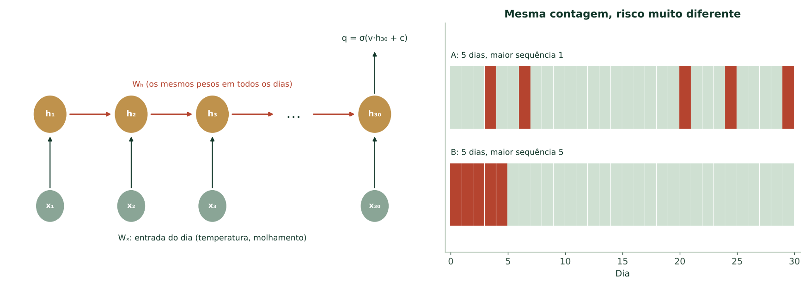
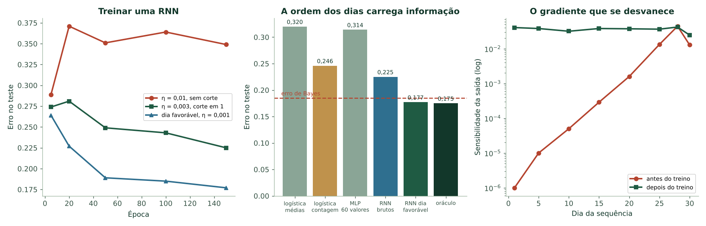

Redes neurais recorrentes (RNN)
Lê a sequência um passo de cada vez, com um estado que resume o passado e os mesmos pesos em todos os passos — usa a ordem que os outros modelos ignoram.
Comece por aqui
Os modelos das fichas anteriores tratam as entradas como um conjunto sem ordem: trocar a coluna do dia 3 pela do dia 17 não muda nada para eles. Para uma sequência — 30 dias de clima, uma série de leituras, uma frase —, a ordem é informação. A rede recorrente lê a sequência um passo de cada vez, mantendo um estado que resume o que veio antes e que é atualizado a cada passo pelos mesmos pesos.
Nos dados de teste há dois talhões com exatamente 5 dias favoráveis em 30. No primeiro, os dias estão espalhados (maior sequência: 1 dia) e a probabilidade verdadeira de surto é 0,0411. No segundo, são 5 dias seguidos, e a probabilidade é 0,7408. Qualquer modelo que só conte os dias dá a mesma resposta aos dois. Uma RNN pode distingui-los.
O que é uma rede recorrente
Em cada dia \(t\), a rede combina a entrada do dia \(x_t\) com o estado anterior \(h_{t-1}\) e produz o novo estado \(h_t\). Depois do último dia, uma camada de saída transforma \(h_{30}\) na probabilidade de surto. Desenrolada no tempo, uma RNN é uma rede muito profunda — 30 camadas — em que todas as camadas compartilham os mesmos pesos.

| Modelo | Usa a ordem? | Parâmetros (aqui) |
|---|---|---|
| Logística em resumos (médias, contagens) | Não | 2 ou 3 |
| MLP nos 60 valores | Em princípio; sem compartilhar pesos | 1.985 |
| RNN simples (Elman) | Sim | 321 |
| LSTM / GRU | Sim, com memória longa | ≈ 4 vezes a RNN |
Pressupostos e como verificá-los
| Pressuposto ou cuidado | Por que importa | Como verificar |
|---|---|---|
| Sequências independentes entre si | Cada talhão é uma unidade. | Desenho; validação por talhão ou por período. |
| Entradas padronizadas | tanh satura. | Média e desvio do treino. |
| Treino estável | Gradientes explodem na recorrência. | Corte da norma; curva do erro. |
| Memória necessária | RNN simples esquece depressa. | Sensibilidade a dias antigos; LSTM/GRU. |
| Dados suficientes | A rede aprende o que agrônomos já sabem a duras penas. | Compare com variáveis construídas por conhecimento. |
Formulação e cálculo
Em que:
- \(x_t\)
- entrada no dia \(t\): temperatura e molhamento padronizados
- \(h_t\)
- estado oculto, com \(H\) componentes
- \(W_x,\ W_h,\ b\)
- pesos da entrada, da recorrência e viés — os mesmos em todos os dias
- \(T\)
- comprimento da sequência (30)
A retropropagação no tempo
O gradiente em relação a uma entrada antiga passa por todos os estados intermediários:
É um produto de \(T-t\) matrizes. Se elas "encolhem" vetores (raio espectral efetivo menor que 1), o produto vai a zero exponencialmente — o gradiente que se desvanece (Bengio, Simard e Frasconi, 1994), e a rede não aprende a usar o passado distante. Se "esticam", o produto explode, e um passo de treino pode jogar os pesos para longe: o remédio é o corte da norma do gradiente (Pascanu, Mikolov e Bengio, 2013).
Exemplo numérico: quatro dias com H = 2 e pesos escolhidos à mão
| Dia | x (temperatura, molhamento) | h |
|---|---|---|
| 1 | (2,171; −0,906) | (−0,363; −0,522) |
| 2 | (1,512; −0,059) | (−0,089; −0,453) |
| 3 | (1,413; 0,572) | (0,549; −0,182) |
| 4 | (1,189; 0,895) | (0,852; 0,129) |
Com \(W_x=\begin{pmatrix}0{,}2&-0{,}1\\0{,}9&0{,}4\end{pmatrix}\) e \(W_h=\begin{pmatrix}0{,}5&0\\0{,}3&0{,}6\end{pmatrix}\), no dia 1 o estado parte de zero e só reflete a entrada. A partir do dia 2, cada estado é uma mistura da entrada do dia com o estado anterior: nos dias 3 e 4, com molhamento acima da média, a primeira componente sobe de −0,089 para 0,549 e 0,852 — ela "conta" dias úmidos seguidos, decaindo quando o molhamento cai. Treinar a rede é encontrar pesos que façam um dos componentes de \(h\) se comportar como um contador de dias favoráveis seguidos.
Propriedades
- Processa sequências de qualquer comprimento com o mesmo número de parâmetros.
- Usa a ordem: permutar os passos muda a saída.
- Desenrolada, é uma rede profunda com pesos compartilhados.
- Treino instável sem corte do gradiente.
- Memória curta na versão simples; LSTM e GRU usam portões para preservar o estado.
- Para sequências longas e muitos dados, convoluções 1D e transformadores são alternativas.
Como interpretar os resultados
| Elemento | O que informa | Cuidado |
|---|---|---|
| Curva do erro por época | Estabilidade do treino. | Oscilação: passo grande ou falta de corte. |
| Erro com a ordem embaralhada | Se a rede usa a ordem. | Compare com o erro na ordem verdadeira. |
| Sensibilidade a cada passo | Até onde vai a memória. | Antes e depois do treino. |
| Comparação com resumos | Quanto vale a ordem. | Use resumos construídos com conhecimento do problema. |
Como executar no R e em Python
Onde executar o código em Python
Não é preciso instalar nada: o Google Colab é um computador na nuvem, gratuito, que executa Python pelo navegador e já traz as bibliotecas usadas aqui (numpy, scipy e matplotlib).
No R, o pacote keras3 (com instalação adicional do Python e do TensorFlow) oferece layer_simple_rnn(), layer_lstm() e layer_gru(); as entradas são um arranjo de dimensão (sequências, passos, variáveis). O corte da norma do gradiente é o argumento clipnorm do otimizador. O pacote torch é a alternativa sem Python. Em Python, keras ou torch.nn.RNN, LSTM e GRU. O script desta ficha implementa a RNN em numpy, com a retropropagação no tempo e o otimizador Adam escritos à mão.
library(keras3)
rnn <- keras_model_sequential(input_shape = c(30, 2)) |>
layer_simple_rnn(units = 16) |>
layer_dense(units = 1, activation = "sigmoid")
rnn |> compile(optimizer = optimizer_adam(0.003, clipnorm = 1),
loss = "binary_crossentropy", metrics = "accuracy")
Exemplo de aplicação
Contexto dos dados
Os dados são fictícios e foram criados pelo autor: 3.000 talhões de café (2.000 para treino e 1.000 para teste), cada um com 30 dias de temperatura média (°C) e de horas de molhamento foliar, e a ocorrência de surto de ferrugem na semana seguinte (36,05% dos talhões de treino). O clima tem períodos chuvosos persistentes, como na realidade. O processo gerador é conhecido: um dia é favorável à infecção quando tem 8 horas ou mais de folha molhada e temperatura entre 19 e 25 °C, e o risco de surto depende da maior sequência de dias favoráveis seguidos, não do número total deles — a infecção exige que as condições se mantenham. As duas grandezas têm correlação 0,8424; a diferença entre elas é justamente a informação de ordem. O erro de Bayes é 0,1848. O arquivo clima.csv (pasta scripts/ do site) traz um talhão por linha, com as 30 temperaturas e os 30 molhamentos.
Código em R
# Redes neurais recorrentes (RNN): exemplo completo ----
# Pacote: keras3 (exige instalar o Python e o TensorFlow uma única vez)
# install.packages("keras3"); keras3::install_keras()
library(keras3)
url <- "https://cassiushenrique.github.io/ModelosEstatisticos/scripts/clima.csv"
cl <- if (file.exists("clima.csv")) read.csv("clima.csv") else read.csv(url)
tr <- cl[cl$conjunto == "treino", ]; te <- cl[cl$conjunto == "teste", ]
temp_tr <- as.matrix(tr[, paste0("temp", 1:30)]); molh_tr <- as.matrix(tr[, paste0("molh", 1:30)])
temp_te <- as.matrix(te[, paste0("temp", 1:30)]); molh_te <- as.matrix(te[, paste0("molh", 1:30)])
# ---- 1. As referências que ignoram a ordem
fav <- function(t, m) (m >= 8) & (t >= 19) & (t <= 25)
maior_seq <- function(f) apply(f, 1, function(r) { x <- rle(r); max(c(0, x$lengths[x$values])) })
d_tr <- data.frame(surto = tr$surto, n_fav = rowSums(fav(temp_tr, molh_tr)),
seq = maior_seq(fav(temp_tr, molh_tr)))
d_te <- data.frame(surto = te$surto, n_fav = rowSums(fav(temp_te, molh_te)),
seq = maior_seq(fav(temp_te, molh_te)))
g_cont <- glm(surto ~ n_fav, data = d_tr, family = binomial)
mean((predict(g_cont, d_te, type = "response") >= 0.5) != d_te$surto) # conta os dias
g_seq <- glm(surto ~ seq, data = d_tr, family = binomial) # o "oráculo"
mean((predict(g_seq, d_te, type = "response") >= 0.5) != d_te$surto)
# ---- 2. A RNN nos dados brutos: entradas (talhões, 30 dias, 2 variáveis)
mt <- mean(temp_tr); st <- sd(temp_tr); mm <- mean(molh_tr); sm <- sd(molh_tr)
arr <- function(t, m) { a <- array(0, c(nrow(t), 30, 2))
a[, , 1] <- (t - mt) / st; a[, , 2] <- (m - mm) / sm; a }
Xtr <- arr(temp_tr, molh_tr); Xte <- arr(temp_te, molh_te)
set_random_seed(1)
rnn <- keras_model_sequential(input_shape = c(30, 2)) |>
layer_simple_rnn(units = 16, activation = "tanh") |>
layer_dense(units = 1, activation = "sigmoid")
summary(rnn) # 321 parâmetros
rnn |> compile(optimizer = optimizer_adam(learning_rate = 0.003, clipnorm = 1),
loss = "binary_crossentropy", metrics = "accuracy")
rnn |> fit(Xtr, tr$surto, epochs = 150, batch_size = 64, validation_split = 0.2, verbose = 0)
rnn |> evaluate(Xte, te$surto)
# ---- 3. A RNN no indicador de dia favorável (+1 / -1)
Ftr <- array(2 * fav(temp_tr, molh_tr) - 1, c(nrow(tr), 30, 1))
Fte <- array(2 * fav(temp_te, molh_te) - 1, c(nrow(te), 30, 1))
rnn2 <- keras_model_sequential(input_shape = c(30, 1)) |>
layer_simple_rnn(16) |> layer_dense(1, activation = "sigmoid")
rnn2 |> compile(optimizer = optimizer_adam(0.001, clipnorm = 1), loss = "binary_crossentropy",
metrics = "accuracy")
rnn2 |> fit(Ftr, tr$surto, epochs = 150, batch_size = 64, verbose = 0)
rnn2 |> evaluate(Fte, te$surto)
# ---- 4. A rede usa a ordem? Avalie com os dias embaralhados
set.seed(9); o <- sample(30)
rnn2 |> evaluate(Fte[, o, , drop = FALSE], te$surto)
# ---- 5. As variantes com portões: troque layer_simple_rnn por
# layer_lstm(16) ou layer_gru(16)
A mesma análise em Python, com os resultados
Cole o código em um notebook do Google Colab ↗ e execute com Shift+Enter. Os valores abaixo são a saída desse código.
import numpy as np
# ------------------------------------------------------------------
# Bloco comum às fichas deste grupo: funções auxiliares e dados (dados16rnn)
# ------------------------------------------------------------------
import numpy as np
# Sequências fictícias de 30 dias de clima em talhões de café, e a ocorrência
# de SURTO de ferrugem na semana seguinte. A infecção exige vários dias
# SEGUIDOS de folha molhada (>= 8 h) com temperatura entre 19 e 25 C:
# o que importa é a MAIOR SEQUÊNCIA de dias favoráveis, não a quantidade.
T = 30
def clima(rg, n):
chuva = np.zeros((n, T), bool); st = rg.random(n) < 0.3
for t in range(T): # períodos chuvosos persistentes
st = np.where(st, rg.random(n) < 0.72, rg.random(n) < 0.20); chuva[:, t] = st
molh = np.clip(np.where(chuva, rg.normal(10.5, 2.5, (n, T)), rg.normal(4.0, 2.5, (n, T))), 0, 24)
base = rg.normal(22, 2.2, n)[:, None]
temp = base + np.cumsum(rg.normal(0, 0.6, (n, T)), 1)*0.5 - 1.2*chuva + rg.normal(0, 0.8, (n, T))
return temp, molh
def favoravel(temp, molh): return (molh >= 8) & (temp >= 19) & (temp <= 25)
def maior_seq(f):
r = np.zeros(f.shape[0], int); cur = np.zeros(f.shape[0], int)
for t in range(f.shape[1]):
cur = np.where(f[:, t], cur + 1, 0); r = np.maximum(r, cur)
return r
def p_surto(temp, molh): return 1/(1 + np.exp(-(-4.2 + 1.05*maior_seq(favoravel(temp, molh)))))
def amostra(n, semente):
rg = np.random.default_rng(semente); temp, molh = clima(rg, n)
p = p_surto(temp, molh); y = (rg.random(n) < p).astype(int)
return temp, molh, y, p
TTR, MTR, YTR, PTR = amostra(2000, 31)
TTE, MTE, YTE, PTE = amostra(1000, 32)
# ------------------------------------------------------------------ fim do bloco comum
from sklearn.linear_model import LogisticRegression
from sklearn.neural_network import MLPClassifier
def c(v, d=4): return ('%.*f' % (d, v)).replace('.', ',')
def aval(q, y):
qq = np.clip(q, 1e-7, 1 - 1e-7)
return float(np.mean((q >= .5) != y)), float(-np.mean(y*np.log(qq) + (1 - y)*np.log(1 - qq)))
print('CLIMA E FERRUGEM (dados fictícios): 30 dias de temperatura média (C) e')
print('horas de molhamento foliar por dia, em 3.000 talhões; resposta: surto de')
print('ferrugem na semana seguinte (1) ou não (0).')
print('Processo gerador CONHECIDO: o risco depende da MAIOR SEQUÊNCIA de dias')
print('favoráveis seguidos (molhamento >= 8 h e temperatura de 19 a 25 C).')
erro_bayes = float(np.mean(np.minimum(PTE, 1 - PTE)))
print(' treino: 2.000 talhões; teste: 1.000. Prevalência no treino = %s' % c(YTR.mean()))
print(' erro de Bayes no teste = %s' % c(erro_bayes))
f = favoravel(TTR, MTR)
print(' correlação entre o NÚMERO de dias favoráveis e a MAIOR SEQUÊNCIA = %s' % c(np.corrcoef(f.sum(1), maior_seq(f))[0, 1]))
print('\n' + '='*70)
print('DOIS TALHÕES COM O MESMO NÚMERO DE DIAS FAVORÁVEIS')
fte = favoravel(TTE, MTE); cnt = fte.sum(1); seq = maior_seq(fte)
for k in range(4, 12):
i = np.where(cnt == k)[0]
if len(i) > 1 and seq[i].max() - seq[i].min() >= 4: break
a, b = i[np.argmin(seq[i])], i[np.argmax(seq[i])]
for nm, j in [('A', a), ('B', b)]:
print(' talhão %s: %d dias favoráveis, maior sequência %d, P(surto) = %s' % (nm, cnt[j], seq[j], c(PTE[j])))
print(' ' + ''.join('#' if v else '.' for v in fte[j]))
print('Um modelo que só conta os dias não distingue A de B. A ORDEM importa.')
# ------------------------------------------------------------ preparação
mt, st_ = TTR.mean(), TTR.std(); mm, sm = MTR.mean(), MTR.std()
def entrada(Tm, Mo): return np.stack([(Tm - mt)/st_, (Mo - mm)/sm], -1) # (n, T, 2)
Xtr, Xte = entrada(TTR, MTR), entrada(TTE, MTE)
# ------------------------------------------------------------ a rede recorrente
def rnn_frente(X, p):
n = X.shape[0]; H = p['Wh'].shape[0]; h = np.zeros((n, H)); hs = [h]
for t in range(X.shape[1]):
h = np.tanh(X[:, t] @ p['Wx'] + h @ p['Wh'] + p['b']); hs.append(h)
q = 1/(1 + np.exp(-(h @ p['v'] + p['c'])))
return q, hs
def rnn_gradiente(X, y, p):
q, hs = rnn_frente(X, p); n = len(y)
g = (q - y)/n
gr = {k: np.zeros_like(v) for k, v in p.items()}
gr['v'] = hs[-1].T @ g; gr['c'] = np.array([g.sum()])
dh = np.outer(g, p['v'])
for t in range(X.shape[1] - 1, -1, -1): # retropropagação no tempo
da = dh*(1 - hs[t + 1]**2)
gr['Wx'] += X[:, t].T @ da; gr['Wh'] += hs[t].T @ da; gr['b'] += da.sum(0)
dh = da @ p['Wh'].T
return gr
def treina_rnn(A, H=16, epocas=150, semente=0, lote=64, eta=0.001, corte=1.0, embaralha=False, B=None, marcas=()):
"""Adam com corte da norma do gradiente (corte=None desliga)."""
rg = np.random.default_rng(semente); d = A.shape[2]
p = dict(Wx=rg.normal(0, 0.5, (d, H)), Wh=rg.normal(0, 0.9/np.sqrt(H), (H, H)), b=np.zeros(H),
v=rg.normal(0, 0.3, H), c=np.zeros(1))
est = {}; t = 0; n = len(YTR); hist = []
for ep in range(epocas):
for ii in np.array_split(rg.permutation(n), n//lote):
Xb = A[ii]
if embaralha: Xb = Xb[:, rg.permutation(T)]
gr = rnn_gradiente(Xb, YTR[ii], p); t += 1
if corte:
nrm = np.sqrt(sum((g**2).sum() for g in gr.values()))
if nrm > corte: gr = {k: g*corte/nrm for k, g in gr.items()}
for k in p:
m, v = est.get(k, (0, 0)); m = 0.9*m + 0.1*gr[k]; v = 0.999*v + 0.001*gr[k]**2; est[k] = (m, v)
p[k] -= eta*(m/(1 - 0.9**t))/(np.sqrt(v/(1 - 0.999**t)) + 1e-8)
if ep + 1 in marcas: hist.append((ep + 1, aval(rnn_frente(A, p)[0], YTR), aval(rnn_frente(B, p)[0], YTE)))
return p, hist
print('\n' + '='*70)
print('A RECORRÊNCIA: h_t = tanh(W_x x_t + W_h h_(t-1) + b), q = sigma(v . h_30 + c)')
print('Os MESMOS pesos são usados em todos os 30 dias. Exemplo com H = 2 e pesos')
print('escolhidos à mão, para um talhão, nos 4 primeiros dias:')
pe = dict(Wx=np.array([[0.2, -0.1], [0.9, 0.4]]), Wh=np.array([[0.5, 0.0], [0.3, 0.6]]), b=np.zeros(2))
h = np.zeros(2)
for t in range(4):
x = Xte[a, t]; a_ = x @ pe['Wx'] + h @ pe['Wh'] + pe['b']; h = np.tanh(a_)
print(' dia %d: x = (%s, %s) -> h = (%s, %s)' % (t + 1, c(x[0], 3), c(x[1], 3), c(h[0], 3), c(h[1], 3)))
print('O estado h carrega um resumo de TUDO o que veio antes.')
print('\n' + '='*70)
print('TREINO DA RNN NOS DADOS BRUTOS (temperatura e molhamento de cada dia)')
print('H = 16, Adam, lotes de 64, retropropagação no tempo. Duas configurações:')
mk = (5, 20, 50, 100, 150)
pa, ha = treina_rnn(Xtr, eta=0.01, corte=None, B=Xte, marcas=mk)
pb, hb = treina_rnn(Xtr, eta=0.003, corte=1.0, B=Xte, marcas=mk)
print()
print('%7s %26s %26s' % ('', 'eta = 0,01, sem corte', 'eta = 0,003, corte em 1'))
print('%7s %13s %12s %13s %12s' % ('época', 'erro teste', 'log-loss', 'erro teste', 'log-loss'))
for (ep, _, ta), (_, _, tb) in zip(ha, hb): print('%7d %13s %12s %13s %12s' % (ep, c(ta[0]), c(ta[1]), c(tb[0]), c(tb[1])))
print('Passo grande sem corte: o erro oscila e não melhora. O CORTE DA NORMA')
print('do gradiente impede os saltos que a recorrência produz.')
p = pb
print('\n' + '='*70)
print('A RNN COM UM PRÉ-PROCESSAMENTO AGRONÔMICO')
print('Em vez dos valores brutos, cada dia entra como +1 (favorável) ou -1.')
print('A rede não precisa mais descobrir a faixa de 19 a 25 C: só a parte TEMPORAL.')
Ftr = favoravel(TTR, MTR)[..., None]*2.0 - 1; Fte = fte[..., None]*2.0 - 1
pf, hf = treina_rnn(Ftr, eta=0.001, corte=1.0, B=Fte, marcas=mk)
print()
print('%7s %14s %14s %14s' % ('época', 'erro treino', 'erro teste', 'log-loss teste'))
for ep, tr_, te_ in hf: print('%7d %14s %14s %14s' % (ep, c(tr_[0]), c(te_[0]), c(te_[1])))
print(' parâmetros: dados brutos %d; dia favorável %d' % (sum(v.size for v in pb.values()), sum(v.size for v in pf.values())))
print('\n' + '='*70)
print('COMPARAÇÃO NO TESTE')
res = []
def lg(A, B):
m = LogisticRegression(C=1e4, max_iter=5000).fit(A, YTR); return m.predict_proba(B)[:, 1]
res.append(('logística nas MÉDIAS (temp., molhamento)', lg(np.column_stack([TTR.mean(1), MTR.mean(1)]), np.column_stack([TTE.mean(1), MTE.mean(1)]))))
res.append(('logística no NÚMERO de dias favoráveis', lg(f.sum(1)[:, None], fte.sum(1)[:, None])))
m = MLPClassifier((32,), alpha=1e-2, max_iter=3000, random_state=0).fit(Xtr.reshape(2000, -1), YTR)
res.append(('MLP nos 60 valores, dia a dia', m.predict_proba(Xte.reshape(1000, -1))[:, 1]))
res.append(('RNN nos dados brutos', rnn_frente(Xte, pb)[0]))
res.append(('RNN no indicador de dia favorável', rnn_frente(Fte, pf)[0]))
res.append(('logística na MAIOR SEQUÊNCIA (oráculo)', lg(maior_seq(f)[:, None], seq[:, None])))
print()
print('%-44s %10s %10s' % ('modelo', 'erro', 'log-loss'))
for nm, q in res: print('%-44s %10s %10s' % (nm, *[c(v) for v in aval(q, YTE)]))
print('%-44s %10s' % ('erro de Bayes', c(erro_bayes)))
print('O "oráculo" recebe a variável que gerou os dados; nenhum método real a')
print('teria. Ele mostra o quanto ainda é possível ganhar.')
print('\n' + '='*70)
print('A RNN USA A ORDEM? Teste com os dias EMBARALHADOS (RNN do dia favorável)')
rg = np.random.default_rng(9); ordem = rg.permutation(T)
print(' erro no teste, ordem verdadeira = %s' % c(aval(rnn_frente(Fte, pf)[0], YTE)[0]))
print(' erro no teste, dias embaralhados = %s' % c(aval(rnn_frente(Fte[:, ordem], pf)[0], YTE)[0]))
print('E se a rede for TREINADA com os dias embaralhados? Só pode aprender a contar:')
p2, _ = treina_rnn(Ftr, eta=0.001, corte=1.0, embaralha=True)
print(' erro no teste = %s | log-loss = %s' % tuple(c(v) for v in aval(rnn_frente(Fte, p2)[0], YTE)))
print(' (compare com a logística no NÚMERO de dias favoráveis, acima)')
print('\n' + '='*70)
print('O GRADIENTE QUE SE DESVANECE')
print('Sensibilidade da saída a uma pequena mudança no molhamento de cada dia,')
print('média sobre os talhões de teste (diferenças finitas), na rede dos dados')
print('brutos ANTES e DEPOIS do treino:')
p0, _ = treina_rnn(Xtr, epocas=0, semente=0) # pesos iniciais, sem treino
def sensib(pp):
q0 = rnn_frente(Xte, pp)[0]; out = []
for t in range(T):
Z = Xte.copy(); Z[:, t, 1] += 0.01; out.append(float(np.mean(np.abs(rnn_frente(Z, pp)[0] - q0))/0.01))
return np.array(out)
s0, s1 = sensib(p0), sensib(pb)
print()
print('%6s %16s %16s' % ('dia', 'antes do treino', 'depois'))
for t in [0, 4, 9, 14, 19, 24, 27, 29]: print('%6d %16s %16s' % (t + 1, c(s0[t], 5), c(s1[t], 5)))
print(' razão dia 30 / dia 1: antes %s ; depois %s' % (c(s0[-1]/s0[0], 1), c(s1[-1]/s1[0], 2)))
rho = lambda W: float(np.max(np.abs(np.linalg.eigvals(W))))
print(' raio espectral de W_h: antes %s ; depois %s' % (c(rho(p0['Wh']), 3), c(rho(pb['Wh']), 3)))
print('Na partida, a influência de um dia cai por um fator a cada passo, e o')
print('dia 1 quase não chega à saída: é o gradiente que se desvanece. O treino')
print('aumentou W_h e aprendeu a reter a memória, o que é possível em 30 passos.')
print('Em sequências de centenas de passos a RNN simples não consegue; as')
print('variantes LSTM e GRU usam portões para preservar a memória.')
print('\n' + '='*70)
print('VARIABILIDADE ENTRE TREINOS: 4 sementes, RNN do dia favorável')
for s_ in range(1, 5):
pp, _ = treina_rnn(Ftr, eta=0.001, corte=1.0, semente=s_)
print(' semente %d: erro teste %s | log-loss %s' % (s_, *[c(v) for v in aval(rnn_frente(Fte, pp)[0], YTE)]))
Resultados da execução
CLIMA E FERRUGEM (dados fictícios): 30 dias de temperatura média (C) e
horas de molhamento foliar por dia, em 3.000 talhões; resposta: surto de
ferrugem na semana seguinte (1) ou não (0).
Processo gerador CONHECIDO: o risco depende da MAIOR SEQUÊNCIA de dias
favoráveis seguidos (molhamento >= 8 h e temperatura de 19 a 25 C).
treino: 2.000 talhões; teste: 1.000. Prevalência no treino = 0,3605
erro de Bayes no teste = 0,1848
correlação entre o NÚMERO de dias favoráveis e a MAIOR SEQUÊNCIA = 0,8424
======================================================================
DOIS TALHÕES COM O MESMO NÚMERO DE DIAS FAVORÁVEIS
talhão A: 5 dias favoráveis, maior sequência 1, P(surto) = 0,0411
...#..#.............#...#....#
talhão B: 5 dias favoráveis, maior sequência 5, P(surto) = 0,7408
#####.........................
Um modelo que só conta os dias não distingue A de B. A ORDEM importa.
======================================================================
A RECORRÊNCIA: h_t = tanh(W_x x_t + W_h h_(t-1) + b), q = sigma(v . h_30 + c)
Os MESMOS pesos são usados em todos os 30 dias. Exemplo com H = 2 e pesos
escolhidos à mão, para um talhão, nos 4 primeiros dias:
dia 1: x = (2,171, -0,906) -> h = (-0,363, -0,522)
dia 2: x = (1,512, -0,059) -> h = (-0,089, -0,453)
dia 3: x = (1,413, 0,572) -> h = (0,549, -0,182)
dia 4: x = (1,189, 0,895) -> h = (0,852, 0,129)
O estado h carrega um resumo de TUDO o que veio antes.
======================================================================
TREINO DA RNN NOS DADOS BRUTOS (temperatura e molhamento de cada dia)
H = 16, Adam, lotes de 64, retropropagação no tempo. Duas configurações:
eta = 0,01, sem corte eta = 0,003, corte em 1
época erro teste log-loss erro teste log-loss
5 0,2890 0,5519 0,2740 0,5495
20 0,3710 0,6162 0,2810 0,5486
50 0,3510 0,5864 0,2490 0,5214
100 0,3640 0,6108 0,2430 0,5003
150 0,3490 0,5989 0,2250 0,5110
Passo grande sem corte: o erro oscila e não melhora. O CORTE DA NORMA
do gradiente impede os saltos que a recorrência produz.
======================================================================
A RNN COM UM PRÉ-PROCESSAMENTO AGRONÔMICO
Em vez dos valores brutos, cada dia entra como +1 (favorável) ou -1.
A rede não precisa mais descobrir a faixa de 19 a 25 C: só a parte TEMPORAL.
época erro treino erro teste log-loss teste
5 0,2485 0,2640 0,5296
20 0,2130 0,2270 0,4706
50 0,1780 0,1890 0,4240
100 0,1680 0,1850 0,4084
150 0,1690 0,1770 0,4048
parâmetros: dados brutos 321; dia favorável 305
======================================================================
COMPARAÇÃO NO TESTE
modelo erro log-loss
logística nas MÉDIAS (temp., molhamento) 0,3200 0,5867
logística no NÚMERO de dias favoráveis 0,2460 0,4838
MLP nos 60 valores, dia a dia 0,3140 1,6904
RNN nos dados brutos 0,2250 0,5110
RNN no indicador de dia favorável 0,1770 0,4048
logística na MAIOR SEQUÊNCIA (oráculo) 0,1750 0,3772
erro de Bayes 0,1848
O "oráculo" recebe a variável que gerou os dados; nenhum método real a
teria. Ele mostra o quanto ainda é possível ganhar.
======================================================================
A RNN USA A ORDEM? Teste com os dias EMBARALHADOS (RNN do dia favorável)
erro no teste, ordem verdadeira = 0,1770
erro no teste, dias embaralhados = 0,3060
E se a rede for TREINADA com os dias embaralhados? Só pode aprender a contar:
erro no teste = 0,2550 | log-loss = 0,4864
(compare com a logística no NÚMERO de dias favoráveis, acima)
======================================================================
O GRADIENTE QUE SE DESVANECE
Sensibilidade da saída a uma pequena mudança no molhamento de cada dia,
média sobre os talhões de teste (diferenças finitas), na rede dos dados
brutos ANTES e DEPOIS do treino:
dia antes do treino depois
1 0,00000 0,04062
5 0,00001 0,03810
10 0,00005 0,03183
15 0,00029 0,03812
20 0,00159 0,03743
25 0,01329 0,03650
28 0,04443 0,04206
30 0,01286 0,02464
razão dia 30 / dia 1: antes 4621,0 ; depois 0,61
raio espectral de W_h: antes 0,940 ; depois 1,998
Na partida, a influência de um dia cai por um fator a cada passo, e o
dia 1 quase não chega à saída: é o gradiente que se desvanece. O treino
aumentou W_h e aprendeu a reter a memória, o que é possível em 30 passos.
Em sequências de centenas de passos a RNN simples não consegue; as
variantes LSTM e GRU usam portões para preservar a memória.
======================================================================
VARIABILIDADE ENTRE TREINOS: 4 sementes, RNN do dia favorável
semente 1: erro teste 0,1910 | log-loss 0,4090
semente 2: erro teste 0,1820 | log-loss 0,4193
semente 3: erro teste 0,1820 | log-loss 0,4112
semente 4: erro teste 0,1870 | log-loss 0,4147
| Época | η = 0,01, sem corte: erro | Log-loss | η = 0,003, corte em 1: erro | Log-loss |
|---|---|---|---|---|
| 5 | 0,2890 | 0,5519 | 0,2740 | 0,5495 |
| 20 | 0,3710 | 0,6162 | 0,2810 | 0,5486 |
| 50 | 0,3510 | 0,5864 | 0,2490 | 0,5214 |
| 100 | 0,3640 | 0,6108 | 0,2430 | 0,5003 |
| 150 | 0,3490 | 0,5989 | 0,2250 | 0,5110 |
| Modelo | Erro | Log-loss |
|---|---|---|
| Logística nas médias (temperatura, molhamento) | 0,3200 | 0,5867 |
| Logística no número de dias favoráveis | 0,2460 | 0,4838 |
| MLP nos 60 valores, dia a dia | 0,3140 | 1,6904 |
| RNN nos dados brutos | 0,2250 | 0,5110 |
| RNN no indicador de dia favorável | 0,1770 | 0,4048 |
| Logística na maior sequência (oráculo) | 0,1750 | 0,3772 |
| Erro de Bayes | 0,1848 | — |
| Situação | Erro no teste |
|---|---|
| Ordem verdadeira | 0,1770 |
| Mesma rede, dias embaralhados no teste | 0,3060 |
| Rede treinada com os dias embaralhados | 0,2550 |
| Dia | Antes do treino | Depois do treino |
|---|---|---|
| 1 | 0,00000 | 0,04062 |
| 10 | 0,00005 | 0,03183 |
| 20 | 0,00159 | 0,03743 |
| 28 | 0,04443 | 0,04206 |
| 30 | 0,01286 | 0,02464 |
Leitura: a tabela de comparação conta a história em degraus. Resumir os 30 dias pelas médias joga fora quase tudo (erro 0,3200). Contar os dias favoráveis — um resumo construído com conhecimento agronômico, mas sem ordem — leva a 0,2460. A RNN nos dados brutos, que precisa descobrir sozinha o que é um dia favorável e a importância das sequências, chega a 0,2250. A RNN que recebe o indicador de dia favorável e só precisa aprender a parte temporal chega a 0,1770, praticamente o mesmo do oráculo (0,1750), que recebe a variável que gerou os dados.
O oráculo e a RNN ficaram abaixo do erro de Bayes (0,1848), o que parece impossível e não é: o erro de Bayes é o erro esperado; num teste de 1.000 talhões, o erro observado tem desvio-padrão de cerca de 0,012, e ficar um desvio abaixo é sorte amostral. A conclusão correta é que os dois estão no limite do possível.
A rede usa a ordem, e isso se mede. Embaralhando os dias no teste, o erro da mesma rede sobe de 0,1770 para 0,3060. Treinando uma rede com os dias embaralhados — o que a impede de aprender qualquer coisa além de contar —, o erro é 0,2550, próximo do da logística na contagem (0,2460). A diferença entre 0,2550 e 0,1770 é o valor da ordem.
O treino de uma RNN é delicado. Com passo 0,01 e sem corte, o erro oscila entre 0,29 e 0,37 por 150 épocas, sem melhorar. Com passo 0,003 e corte da norma em 1, desce a 0,2250. O MLP nos 60 valores, que não compartilha pesos entre os dias, erra 0,3140 e tem log-loss de 1,6904: sobreajusta o treino e dá probabilidades extremas.
O gradiente que se desvanece aparece na rede antes do treino: a influência do dia 1 sobre a saída é 4.621 vezes menor que a do dia 30, e o raio espectral de \(W_h\) é 0,940. O treino aumentou o raio espectral para 1,998 e a rede aprendeu a reter a memória — a sensibilidade ficou praticamente plana nos 30 dias. Em 30 passos isso é possível; em sequências de centenas de passos, a RNN simples não consegue, e as variantes LSTM (Hochreiter e Schmidhuber, 1997) e GRU usam portões que controlam o que o estado guarda e esquece. Entre quatro sementes, a RNN do dia favorável errou de 0,1820 a 0,1910: estável.
Erros comuns
| Erro | Como evitar |
|---|---|
| Treinar sem corte do gradiente | clipnorm no otimizador. |
| Passo grande demais | Curva do erro; reduza η. |
| Usar RNN onde um resumo basta | Compare com logística em resumos bem construídos. |
| Esperar que a rede descubra o que o especialista já sabe | Dê variáveis construídas com conhecimento. |
| Avaliar sem testar a ordem | Embaralhe os passos no teste. |
| Validação com sequências sobrepostas | Separe por unidade ou por período. |
| RNN simples em sequências longas | LSTM, GRU ou convoluções 1D. |
Alternativas e quando cada uma é preferível
| Procedimento | Quando preferir |
|---|---|
| LSTM e GRU | Dependências longas. |
| Convoluções 1D | Padrões locais no tempo, treino mais estável. |
| Variáveis construídas + boosting | Quando o conhecimento do problema define os resumos certos. |
| Modelos de séries temporais (ARIMA, espaço de estados) | Uma série longa, previsão do próximo valor. |
| GEE e modelos mistos | Medidas repetidas com inferência sobre efeitos. |
| Transformadores | Sequências longas e muitos dados. |
- Construa resumos com conhecimento do problema e ajuste um modelo simples.
- Treine a RNN com corte do gradiente e curva do erro à vista.
- Compare com os resumos.
- Teste com os passos embaralhados.
- Se a memória for longa, passe a LSTM ou GRU.
- Repita com várias sementes.
Referências desta ficha
- ELMAN, Jeffrey L. Finding structure in time. Cognitive Science, v. 14, n. 2, p. 179-211, 1990.
- RUMELHART, David E.; HINTON, Geoffrey E.; WILLIAMS, Ronald J. Learning representations by back-propagating errors. Nature, v. 323, p. 533-536, 1986.
- BENGIO, Yoshua; SIMARD, Patrice; FRASCONI, Paolo. Learning long-term dependencies with gradient descent is difficult. IEEE Transactions on Neural Networks, v. 5, n. 2, p. 157-166, 1994.
- PASCANU, Razvan; MIKOLOV, Tomas; BENGIO, Yoshua. On the difficulty of training recurrent neural networks. Proceedings of Machine Learning Research, v. 28, n. 3, p. 1310-1318, 2013.
- HOCHREITER, Sepp; SCHMIDHUBER, Jürgen. Long short-term memory. Neural Computation, v. 9, n. 8, p. 1735-1780, 1997.
- CHO, Kyunghyun et al. Learning phrase representations using RNN encoder-decoder for statistical machine translation. In: CONFERENCE ON EMPIRICAL METHODS IN NATURAL LANGUAGE PROCESSING, 2014, Doha. Proceedings [...]. Doha: ACL, 2014. p. 1724-1734.
- WERBOS, Paul J. Backpropagation through time: what it does and how to do it. Proceedings of the IEEE, v. 78, n. 10, p. 1550-1560, 1990.
- KINGMA, Diederik P.; BA, Jimmy. Adam: a method for stochastic optimization. In: INTERNATIONAL CONFERENCE ON LEARNING REPRESENTATIONS, 3., 2015, San Diego. Proceedings [...]. San Diego: ICLR, 2015.
- GOODFELLOW, Ian; BENGIO, Yoshua; COURVILLE, Aaron. Deep learning. Cambridge: MIT Press, 2016. Disponível em: https://www.deeplearningbook.org/.
- CHOLLET, François; KALINOWSKI, Tomasz; ALLAIRE, J. J. Deep learning with R. 2. ed. Shelter Island: Manning, 2022.
- KALINOWSKI, Tomasz; ALLAIRE, J. J.; CHOLLET, François. keras3: R interface to Keras. R package. Disponível em: https://CRAN.R-project.org/package=keras3.
- R CORE TEAM. R: a language and environment for statistical computing. Vienna: R Foundation for Statistical Computing, 2026. Disponível em: https://www.r-project.org/.
- POSIT TEAM. RStudio: integrated development environment for R. Boston: Posit Software, PBC. Disponível em: https://posit.co/download/rstudio-desktop/.
- PEDREGOSA, Fabian et al. Scikit-learn: machine learning in Python. Journal of Machine Learning Research, v. 12, p. 2825-2830, 2011. (Função
sklearn.datasets.load_iris.) - VIRTANEN, Pauli et al. SciPy 1.0: fundamental algorithms for scientific computing in Python. Nature Methods, v. 17, p. 261-272, 2020. DOI: 10.1038/s41592-019-0686-2. (Funções do módulo
scipy.stats.) - HARRIS, Charles R. et al. Array programming with NumPy. Nature, v. 585, p. 357-362, 2020. DOI: 10.1038/s41586-020-2649-2.
- HUNTER, John D. Matplotlib: a 2D graphics environment. Computing in Science & Engineering, v. 9, n. 3, p. 90-95, 2007.
- GOOGLE. Google Colaboratory. Disponível em: https://colab.research.google.com/.
- As figuras desta ficha foram elaboradas pelo autor.

Prof. Dr. Cássius Henrique Xavier Oliveira
Professor · ICTIN/UFLA · Estatística, Confiabilidade e Ciência de Dados.
Conheça minha trajetória e projetos →